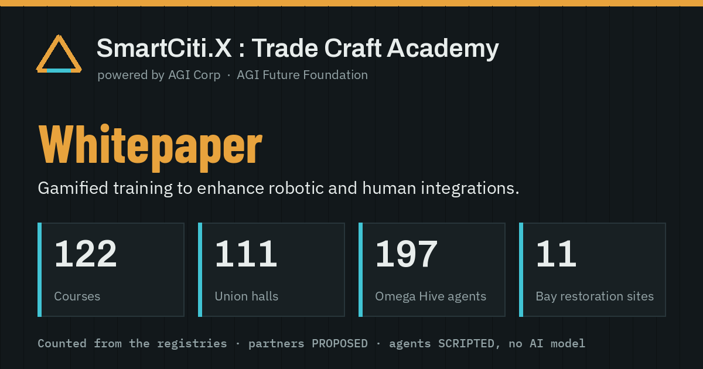

Whitepaper
SmartCiti.X : Trade Craft Academy
powered by AGI Corp · published by AGI Future Foundation

Executive summary
Gamified training to enhance robotic and human integrations.
SmartCiti.X : Trade Craft Academy is a training bundle published by AGI Future Foundation: walkable worlds, trade courses, K-12 programme pathways, a scripted agent roster and robot training sandboxes, each a pack with its own registry. Every figure on this page is counted from those registries when the page is built, and the bundle holds itself to 8,199 automated checks.
- Courses
- 122
- Union halls
- 111
- Omega Hive agents
- 197
- Bay restoration sites
- 11
- Lessons
- 139
- Walkable campuses
- 10
- Trained models
- 1
- AI models behind agents
- 0
Courses AUTHORED by ruleAgents SCRIPTEDPartners PROPOSED
Lessons are unverified general practice, nothing here certifies anybody, and every partner, district and programme named is PROPOSED: no agreement exists.
Worlds
The Academy is a set of walkable worlds a learner moves through in the browser.
- Walkable campuses
- 10
- Louisiana parishes
- 13
- Bay Area counties
- 9
- Wilderness worlds
- 4
- Classroom places
- 262
- Holodeck packs
- 30
The wilderness worlds are High Country, Deep Timber, Red Rock Canyon, Salt Marsh Delta, covering 427.9 square kilometres with 23 sites. Of the holodeck packs, 29 ship and 1 is PROPOSED.
The Unspoken Smiles district is an AUTHORED game district with 37 stations; it is named only as the programme its clinic stations belong to.
AUTHORED game district - not a real place, not surveyed; Unspoken Smiles is named only as the programme the clinic stations belong to (no endorsement, partnership or clinical claim).smiles/registry/smiles.json
Water in the parish and Bay worlds is AUTHORED (procedural), and district layouts are AUTHORED; campus coordinates are RECORDED for some campuses and AUTHORED for others, as each registry labels them.
Training and courses
AUTHORED by ruleunverified general practice
122 courses group 139 lessons and 568 steps: 111 trade courses, one per union hall, and 11 strand courses. 55 courses include a simulator seat.
| Tier | Lessons |
|---|---|
| fundamentals | 93 |
| applied | 46 |
| mastery | 0 |
unverified general practice. The lessons a course lists have not been reviewed by a journey-level practitioner, and grouping them does not change that.courses/registry/courses.json
no course certifies, qualifies or permits anybody to do anything. Finishing every lesson in a course leaves a learner with exactly the standing they started with.courses/registry/courses.json
Union-hall pathways
DERIVEDunions named are not partners
Each of the 111 union halls has one ordered pathway through the courses, lessons, seats, tool crib and advisor already standing in that hall: 604 pathway steps across 8 districts and 2 cohorts. 45 halls have a simulator seat and 38 a crew drill. No apprenticeship hours, wages or credentials are stated; recorded affiliations: 0.
| District | Halls | Lessons | Steps | Halls with seats |
|---|---|---|---|---|
| Structural | 12 | 17 | 77 | 11 |
| Envelope & Finish | 21 | 25 | 105 | 16 |
| Building Systems | 18 | 18 | 68 | 2 |
| Energy & Utilities | 17 | 24 | 92 | 0 |
| Earthworks & Plant | 12 | 17 | 72 | 7 |
| Heavy Industry | 10 | 12 | 54 | 6 |
| Transport & Mobility | 10 | 11 | 43 | 2 |
| Survey, Safety & Environment | 11 | 15 | 57 | 1 |
A union named here is a hall in the Academy's own taxonomy of trades. It is not a partner, sponsor or affiliate, it has not reviewed or endorsed any of this, and no real local is named.unionpaths/registry/union_paths.json
Any tie to a real apprenticeship programme is PROPOSED: no agreement exists with any union, programme or employer.unionpaths/registry/union_paths.json
K-12 and programmes
districts PROPOSEDnothing accredited
The schools pack sets 4 grade bands over 45 units. The classroom has 45 teacher-facing modules and 58 classroom moments, and Cognition.X contributes 2,064 curriculum blocks, quoted verbatim.
105 teacher-facing programme cards pair a module with a hall, its lessons and a play-safe greeter; 79 Omega Hive agents are on the classroom allow-list. AI models used: 0.
| Band | Lessons | Level | Programme cards | Cognition.X blocks |
|---|---|---|---|---|
| K-5 | 74 | Explorer | 8 | 802 |
| 6-8 | 90 | Builder | 11 | 401 |
| 9-10 | 139 | Practitioner | 43 | 396 |
| 11-12 | 139 | Lead | 43 | 395 |
School districts
| District | Status |
|---|---|
| San Francisco Unified School District | PROPOSED |
| Oakland Unified School District | PROPOSED |
| NOLA Public Schools | PROPOSED |
| Jefferson Parish Schools | PROPOSED |
Districts, programmes and organisations named here are PROPOSED: no district, programme or organisation has reviewed or agreed, and no agreement, grant or funding exists.programs/registry/programs.json
The UN path is a PROPOSED module of this game, not affiliated with or endorsed by the United Nations.programs/registry/programs.json
Nonprofit sectors
PROPOSEDmapped to existing work
4 nonprofit sectors are each mapped onto what already exists in the bundle. Every organisation named is PROPOSED, and Unspoken Smiles is named only as the existing pages describe it.
| Sector | Status | Scenarios | Halls | Agents | Worlds |
|---|---|---|---|---|---|
| community-health | PROPOSED | 6 | 0 | 0 | 1 |
| disaster-response | PROPOSED | 25 | 81 | 13 | 1 |
| humanitarian-training | PROPOSED | 8 | 8 | 26 | 2 |
| environmental-restoration | PROPOSED | 16 | 5 | 0 | 1 |
AUTHORED game district - not a real place, not surveyed; Unspoken Smiles is named only as the programme the clinic stations belong to (no endorsement, partnership or clinical claim).programs/registry/programs.json
Bay restoration
sites from public recordscenarios AUTHOREDnot affiliated
11 real San Francisco Bay restoration and cleanup sites, each run by its own organisation, with 16 AUTHORED training scenarios across 3 tracks. Active federal cleanup sites are shown as markers, never as walkable ground.
| Site | Organisation | Habitat | Scenarios | In the Bay world |
|---|---|---|---|---|
| Heron's Head Park Shoreline Resilience Project (Phases 1 and 2) | Port of San Francisco; Literacy for Environmental Justice | shoreline & green infrastructure | 2 | walkable |
| Candlestick Point Stewardship Project (Phases 1 and 2) | California State Parks; community stewardship partners | shoreline stewardship | 4 | walkable |
| Bay Restoration: Youth Engagement and Service Learning in East Oakland | Planting Justice | shoreline & upland restoration | 1 | walkable |
| Alviso Shoreline Habitat Restoration | Grassroots Ecology | marsh-adjacent upland | 1 | walkable |
| South Bay Salt Pond Restoration — ecotone levee (Phase 1) | South Bay Salt Pond Restoration Project (multi-agency) | managed pond to tidal marsh | 2 | walkable |
| Montezuma Tidal and Seasonal Wetlands Restoration Project | San Francisco Bay Restoration Authority (Measure AA) | tidal & seasonal wetland, adjacent upland | 1 | walkable |
| American Canyon Wetlands Restoration Plan | City of American Canyon | wetland & upland shoreline | 1 | walkable |
| Restoring Wetland-Upland Transition Zone Habitat in the North Bay with STRAW | Point Blue Conservation Science (STRAW program) | wetland-upland transition zone | 1 | walkable |
| San Francisco Estuary Invasive Spartina Removal | San Francisco Estuary Invasive Spartina Project (multi-agency) | tidal marsh (invasive-species removal & revegetation) | 1 | marker only |
| Hunters Point Naval Shipyard — EPA Superfund Site (Bayview-Hunters Point) | US Navy (CERCLA lead agency for investigation and cleanup); US EPA Region 9 and California DTSC (oversight and enforcement of Navy cleanup activities) | federal Superfund cleanup site — radiological soil investigation/remediation, hazardous-materials removal and demolition support; NOT habitat restoration and not an open park | 1 | marker only |
| Former Naval Station Treasure Island (NSTI) — Navy BRAC cleanup site (Treasure Island) | US Navy (BRAC / CERCLA lead agency for investigation and cleanup); California DTSC (lead regulator), California Department of Public Health (radiological matters) and the San Francisco Bay Regional Water Quality Control Board (oversight) | former naval station under a Navy-led BRAC/CERCLA cleanup — radiological (Ra-226) and chemical soil investigation and removal, building demolition and parcel-by-parcel transfer to the City; NOT habitat restoration, NOT an open park, and NOT an NPL Superfund site | 1 | marker only |
Funding context
Status: PENDING. Only a headline is known; no scenario is one of the funded projects.
EPA awards $82 million for San Francisco Bay restoration and pollution controlrestoration/registry/scenarios.json
SmartCiti.X : Trade Craft Academy is not affiliated with, and does not certify, endorse or claim to fund, any site or organization named in this pack. Every site and program below is real and independently run by its own listed organization - this extends explicitly to Hunters Point Naval Shipyard: SmartCiti.X has no role in the actual cleanup, the litigation over it, or the Marie Harrison Bayview Air Monitoring Project; and to Former Naval Station Treasure Island: SmartCiti.X has no role in the Navy cleanup, the Restoration Advisory Board, the property transfers to TIDA, or One Treasure Island's Construction Training Program.restoration/registry/restoration.json
Robotics and model comparison
reference policy SCRIPTEDarenas SCHEMATICnot a language model
3 embodiments and 15 environments are specified, with a runnable sandbox. The reference benchmark below is the SCRIPTED reference policy, measured over every declared seed and level; on level one it succeeds in 48 of 80 runs.
| Level | Successes | Runs |
|---|---|---|
| spec litter pickup | 9 | 20 |
| cluttered litter pickup | 5 | 20 |
| dense litter pickup | 7 | 20 |
| spec litter sort | 0 | 20 |
| cluttered litter sort | 0 | 20 |
| dense litter sort | 0 | 20 |
| reachable litter sort | 20 | 20 |
| spec rov survey | 20 | 20 |
| light current rov survey | 20 | 20 |
| strong current rov survey | 20 | 20 |
| spec gate drive | 19 | 20 |
| narrow gates gate drive | 19 | 20 |
| tight gates gate drive | 19 | 20 |
Model comparison
Trained models in the bundle: 1. One is trained: a small behaviour-cloning policy trained on 130 SCRIPTED episodes; not a language model; not trained on any learner's data. It is compared below with the SCRIPTED reference, a SCRIPTED greedy policy and a random baseline on the held-out seeds, measured at build time; intervals are bootstrap confidence intervals at level 0.95 over 2,000 resamples, and the win rate is paired against the reference on the same task, level and seed.
| Rank | Policy | Kind | Runs | Success rate | Interval | Paired win rate vs reference | Interval | Wins / ties / losses |
|---|---|---|---|---|---|---|---|---|
| 1 | Scripted reference | SCRIPTED | 130 | 0.5923 | [0.5154, 0.6769] | 0.5 | [0.5, 0.5] | 0 / 130 / 0 |
| 2 | Behaviour cloning (small MLP) | TRAINED | 130 | 0.4231 | [0.3385, 0.5077] | 0.1077 | [0.0615, 0.1538] | 9 / 10 / 111 |
| 3 | Greedy pursuit | SCRIPTED | 130 | 0.3769 | [0.3, 0.4615] | 0.2192 | [0.1615, 0.2808] | 15 / 27 / 88 |
| 4 | Uniform random | BASELINE | 130 | 0 | [0, 0] | 0 | [0, 0] | 0 / 0 / 130 |
Held-out seeds: 10; tasks: 13; environments excluded, each with its reason: 11.
The trained policy's card, verbatim
- what
- a small behaviour-cloning policy trained on 130 SCRIPTED episodes; not a language model; not trained on any learner's data
- architecture
- MLP 24-16-4, softsign hidden units, linear outputs (v, w, grip, vz; masked per task)
- parameters
- 468
- trained by
- robotics/arena/train.mjs, in Node at build time
- optimiser
- plain minibatch gradient descent: learning rate 0.05, batch 64, 24 epochs, no momentum, no Adam
- data
- 130 SCRIPTED reference episodes (58675 control steps) on the TRAIN seeds 1-10; the TEST seeds 11-20 are held out
- inputs
- 24 egocentric features: goal bearing and distance, two nearest obstacles and the nearest wall (bearing, clearance), contact, gripper, depth error, v, w, task one-hot
- determinism
- seeded init (20261012) and shuffles (1018); weights stored as integer micro-units and sha256-pinned
No policy here is a language model, and none calls one. No network.robotics/arena/registry/arena.json
Omega Claw: the tournament and the datasets
agents SCRIPTEDno AI modeldatasets for training elsewhere
A tournament of 1,040 runs puts 4 policies through the same tasks, levels and seeds. Disagreements between the referee and the success rule: 0.
| Policy | Provenance | Runs | Successes | Collisions | Mean return |
|---|---|---|---|---|---|
| scripted | SCRIPTED | 260 | 158 | 0 | -0.204 |
| random | BASELINE | 260 | 0 | 3,420 | -12.503 |
| greedy | SCRIPTED | 260 | 99 | 2,016 | -5.255 |
| bc | TRAINED | 260 | 119 | 344 | -2.485 |
| Pair | Pairs | First only | Second only | Sign-test p | Mean return difference |
|---|---|---|---|---|---|
| random vs scripted | 260 | 0 | 158 | 5.47e-48 | -12.299 |
| greedy vs scripted | 260 | 0 | 59 | 3.47e-18 | -5.051 |
| bc vs scripted | 260 | 0 | 39 | 3.64e-12 | -2.281 |
376 of 1040 runs met the success rule; 664 reached the step cap; 0 outcomes disagreed with the rule.robotics/claw/registry/claw.json
The dataset holds 260 samples from 260 seeded episodes of the SCRIPTED reference policy; learner episodes in it: 0; samples that met their success rule: 158.
| Split | Train | Validation | Test | Rule |
|---|---|---|---|---|
| seen-tasks | 208 | 26 | 26 | every task family appears in every split; the seed sets are disjoint |
| unseen-tasks | 140 | 60 | 60 | whole task families are held out; no family, instruction or trajectory appears in two splits |
5 Omega Claw agents run the tournament and the datasets. AI models behind them: 0.
| Agent | Job | Provenance |
|---|---|---|
| Scheduler | builds the tournament queue: policies x tasks x levels x seeds | SCRIPTED |
| Referee | applies each task's own termination and success rules | SCRIPTED |
| Data Steward | assembles the datasets and enforces consent scope and revocations | SCRIPTED |
| Evaluator | compares policies with paired statistics on the same task, level and seed | SCRIPTED |
| Coach | turns a learner's measured episode into a next-lesson or next-level suggestion | SCRIPTED |
No AI model runs behind any agent. Voices are the device's own speech synthesis, on a click only; nothing is sent anywhere.robotics/claw/registry/claw.json
No language model is trained here, and no policy here uses one. The datasets are for training a robot-learning model elsewhere.
THIS PACK TRAINS NOTHING. These datasets are for training a robot-learning model elsewhere; robotics/claw trains no LLM, no VLA and no controller, and no language model is trained or used. The robotics registry counts 1 trained model(s) in the whole repo, none trained by this pack (robotics/registry/robotics.json#counts.trained_models).robotics/claw/registry/claw.json
Learning strategies in a simulated learner
A separate comparison is recorded between 3 sequencing strategies in a simulated learner: of 27 metric comparisons across 12 seeds, 20 separate on every seed and 7 overlap. Assumptions validated against real learners: 0.
NOTHING HAS BEEN TRAINED ON ANY LEARNER'S DATA, and no language model is trained or used here. 1 model has been trained in this repo, at build time by robotics/arena/train.mjs: a small behaviour-cloning policy trained on 130 SCRIPTED episodes; not a language model; not trained on any learner's data. Its weights are sha256-pinned in robotics/arena/registry/models.json, and robotics/arena/harness.mjs compares it with the SCRIPTED reference on seeds it never saw. No model has been trained on any human (world-teleop or sim) episode.robotics/registry/robotics.json
Omega Hive
SCRIPTEDno AI modelpersonalities AUTHORED
197 agents - 9 hall advisors, 6 crews with 20 roles and 168 world guides - each with an avatar, an AUTHORED personality and a voice. They say only the 1,133 lines quoted from their registries. The voice is the device's own speech synthesis and speaks only on a click. AI models: 0; agents on the K-12 allow-list: 79.
No AI model runs behind any agent, and no network is reached. The council picks lines by counting shared words between a question and the quoted lines - a fixed rule that gives the same answer every time - and says so when nothing matches.hive/registry/hive.json
Voice is the device's own speech synthesis (the browser's speechSynthesis, on-device voices only). It speaks only when you press a speak button, never on its own, and a mute switch silences it. No audio is recorded or sent anywhere.hive/registry/hive.json
Tool stack
Every vendored third-party file - libraries, fonts, icons and map and terrain data - is listed in the bundle's CycloneDX software bill of materials: 86 components. Grouped by name and version:
| Component | Version | Licence | Files | Kind |
|---|---|---|---|---|
| three | 0.160.0 | MIT | 7 | library |
| archivo | v25 | OFL-1.1 | 7 | library |
| barlow-condensed | v13 | OFL-1.1 | 5 | library |
| ibm-plex-mono | v20 | OFL-1.1 | 7 | library |
| ibm-plex-sans | v23 | OFL-1.1 | 11 | library |
| lucide-static | 1.48.0 | ISC | 23 | library |
| maplibre-gl | 5.24.0 | BSD-3-Clause | 2 | library |
| @reactor-team/js-sdk | 3.0.2 | Apache-2.0 | 4 | library |
| us-atlas | 3.0.1 | ISC | 2 | library |
| usgs-3dep-1-arc-second | current | LicenseRef-US-Government-Public-Domain | 3 | data |
| esa-worldcover | v200 | CC-BY-4.0 | 4 | data |
the implementation bundle; every pack outside web/vendor, parishes/vendor, elevation/vendor, landcover/vendor is first-party with zero runtime dependenciessecurity/registry/sbom.cdx.json
Roadmap
The roadmap carries no dates: it is an ordered record of what is built and what is still open.
- Campus target
- 10
- Campuses built
- 10
- Candidates
- 0
- Open gaps
- 16
- Open questions
- 12
- Declared, not built
- 13
this was an ordered list of what was next, not a timeline: no candidate ever carried a committed date, and none remain to carry one now.roadmap/registry/roadmap.json
Honest status
- Trained models: 1. Robots are AUTHORED and the reference policies SCRIPTED; the trained policy is a small behaviour-cloning network, not a language model, trained on SCRIPTED episodes and no learner data.
- No language model is trained here.
- AI models behind Omega Hive agents: 0.
- Partners, school districts and programmes are PROPOSED; no agreement exists. Unions named are halls in the Academy's own taxonomy, not partners. The UN path is PROPOSED and not affiliated.
- Nothing is accredited, and lessons are unverified general practice.
- Bay restoration funding context: PENDING.
- Holodeck packs proposed, not shipping: 1.
- Games, coins and badges are play.
reference clone absent on this machine; transcription kept as recordedsmiles/registry/smiles.json
Contact
Questions, a proposed partnership or a correction: write to AGI Future Foundation.
The code opens the same address in a mail app.